The graph-cut day built a pixel graph with contrast weights and cut it with seeds. Today the same graph and the same seeds, but a different question: not “where is the cheapest cut?” but “how likely is each pixel to belong to each seed?” (Grady, 2006).
Slides titled The math give the formulas and proofs; the ideas are complete without them.
Builds on: Day 27: Graph cuts; Day 15: Watershed.
From the graph-cut unit: one node per pixel, an edge between neighbours with contrast weight w_{pq} = \exp\!\big(-(I_p - I_q)^2/2\sigma^2\big), strong (thick) inside regions, weak across image edges.
From the normalized-cut unit: for values x_p on the nodes, \tfrac12\textstyle\sum_{p,q} w_{pq}(x_p - x_q)^2 = \mathbf x^\top L\,\mathbf x is small when strongly linked neighbours have similar values. Normalized cuts minimised it without seeds and needed an eigenvector. With seeds fixed at 1 and 0 it becomes a linear system.
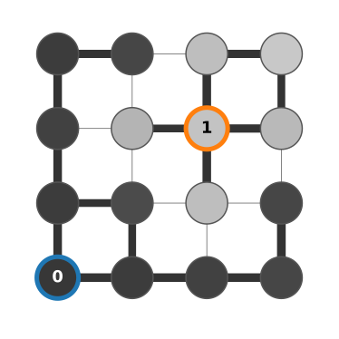
Drop a random walker on an unlabelled pixel. At each step it moves to a neighbour, chosen with probability proportional to the edge weight: it rarely crosses an image edge.
The pixel’s value: the probability that the walker reaches an object seed before a background seed.
Right: 20 walks from the red square (yellow paths, first 400 steps). 13 end on the object seed (orange), 7 on a background seed (blue): an estimate of 0.65. The exact value is 0.80; with 20 walks the estimate is still rough (±0.09).
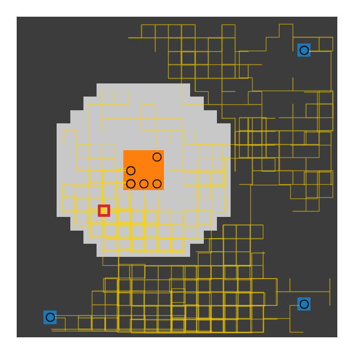
Where does the walker go first? To neighbour q with probability w_{pq}/d_p (d_p = sum of the weights at p). From there it has the probability of q. So:
A function that equals the weighted average of its neighbours everywhere except at the seeds is called harmonic. Finding it is one sparse linear system: one equation per unlabelled pixel, with about five non-zeros (the pixel and its four neighbours).
A worked case with one free pixel x, joined to an object seed with w = 3 and to two background seeds with w = 1 each: x = \frac{3\cdot 1 + 1\cdot 0 + 1\cdot 0}{3 + 1 + 1} = \frac35 .
Make every edge a resistor with conductance w_{pq} (resistance 1/w_{pq}). Put the object seeds at 1 V and the background seeds at 0 V. Kirchhoff’s current law at a free node says exactly “voltage = weighted average of the neighbours”: the probability is the voltage.
On a chain the current is the same through every resistor, so the voltage drops in proportion to resistance.
Five nodes, weights 1, 1, 0.25, 1: resistances 1, 1, 4, 1, total 7. Voltages 1, \tfrac67, \tfrac57, \tfrac17, 0. The weak link (an image edge) takes \tfrac47 of the drop, and the 0.5 crossing lies inside it.
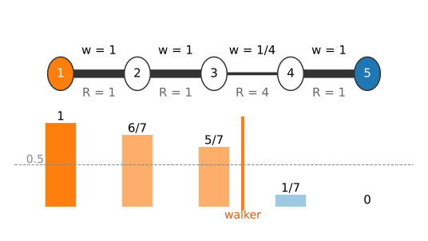
Minimise E(\mathbf x) = \tfrac12\sum_{p,q} w_{pq}(x_p - x_q)^2 = \mathbf x^\top L\,\mathbf x (each edge once in the sum over edges: \sum_{(p,q)} w_{pq}(x_p - x_q)^2), with L = D - W, and \mathbf x_M fixed at the marked (seed) nodes.
Order the nodes as marked, unmarked: L = \begin{pmatrix} L_M & B \\ B^\top & L_U\end{pmatrix}, so E = \mathbf x_M^\top L_M\mathbf x_M + 2\,\mathbf x_U^\top B^\top\mathbf x_M + \mathbf x_U^\top L_U\mathbf x_U . Setting the gradient with respect to \mathbf x_U to zero: L_U\,\mathbf x_U = -B^\top\mathbf x_M . Row p reads d_p x_p - \sum_{q \in U} w_{pq}x_q = \sum_{q \in M} w_{pq}x_q, i.e. d_p x_p = \sum_q w_{pq} x_q: the neighbour average. E is convex, so this stationary point is the minimum.
Right: three strokes on the micrograph (one object, three background). The 0.5 contour follows the nuclear envelope; the map is pale (unsure) in the cytoplasm far from all seeds, deep red only inside the nucleus.
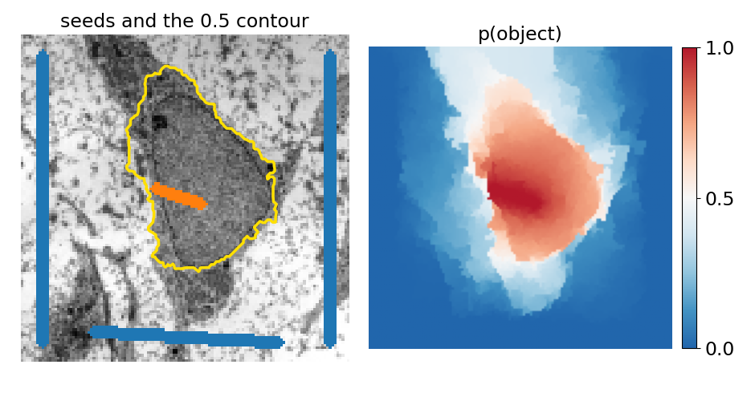
With K seed labels, solve one system per label: seeds of that label at 1, all other seeds at 0. The K probabilities sum to 1 at every pixel, so K - 1 systems are enough.
Right: object seed (orange), a second object (green) and background (blue). The two discs touch with a weak boundary (grey levels 180 and 160, noise 10): the walker shares the contact zone between their seeds, with an orange-to-green blend across the waist.
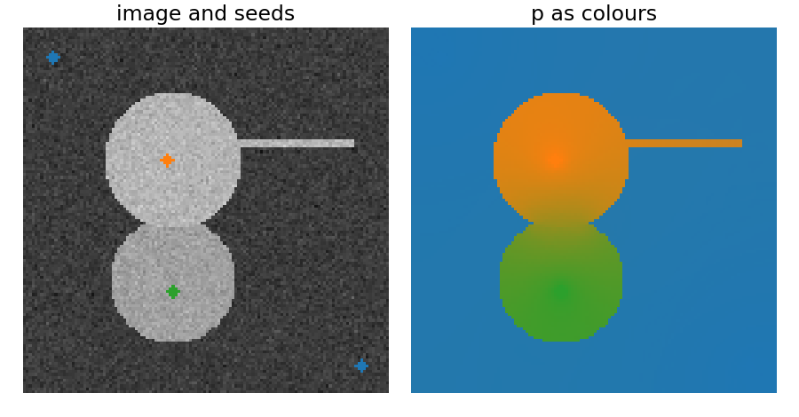
Seven nodes, weights 0.2, 1, 1, 1, 1, 0.25 (resistances 5, 1, 1, 1, 1, 4, total 13).
The 0.5 crossing sits where half the total resistance between the seeds is reached.
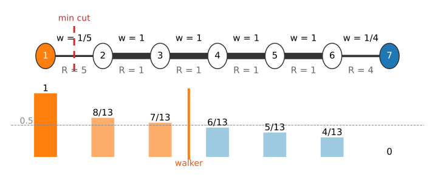
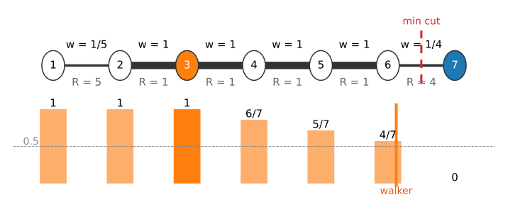
In a large region without edges, the walker’s answer is decided by geometry: how close the pixel is to each seed, not by the image.
Right: no edges at all (\sigma = \infty), one tiny seed in each corner. Along the diagonal the probability falls quickly near each seed and is close to 0.5 over most of the image: a large unmarked region is decided only weakly, and the boundary falls in the middle.
Fix: more seeds, or seeds spread over the region (strokes rather than clicks).
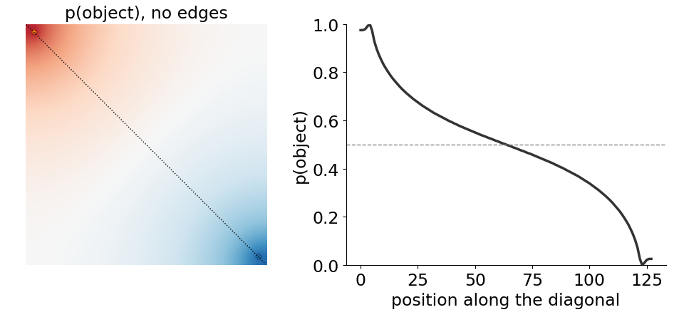
No edge between two brightnesses. Left half 80, right half 170, joined by a smooth ramp: no edge anywhere. Seeds at x = 6 and x = 86. The walker crosses 0.5 at x \approx 45, between the seeds, not at the true split (x = 64).
σ. Too small: noise differences already make weak links, the walker is trapped near its seeds and the map is patchy. Too large: real edges are no longer weak links. As for the graph cut, σ should be larger than the noise differences and smaller than the edge contrast.
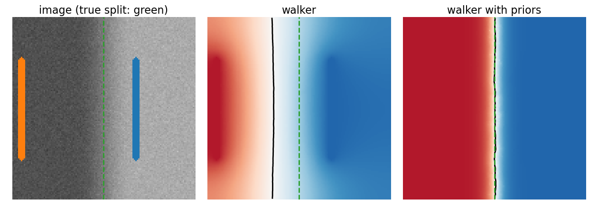
Add a per-pixel pull towards each class from an intensity model: the histograms of the seed pixels give, at every grey level, the probability of each class (the data term of the segmentation-energy unit).
| graph cut | random walker | |
|---|---|---|
| weights | w_{pq} | the same w_{pq} |
| minimises | sum of cut weights | sum of squared differences |
| labels | hard 0/1 | soft probabilities |
| exact? | yes (max-flow) | yes (linear system) |
| islands | possible with a data term | never (max. principle) |
| typical bias | shrinking: short boundaries | seed position, far regions |
On clean, strong edges both give the same answer (right: the same seeds, seeds only for the cut). They differ on weak edges and near small seeds; the watershed as a spanning forest is the third member of the family.
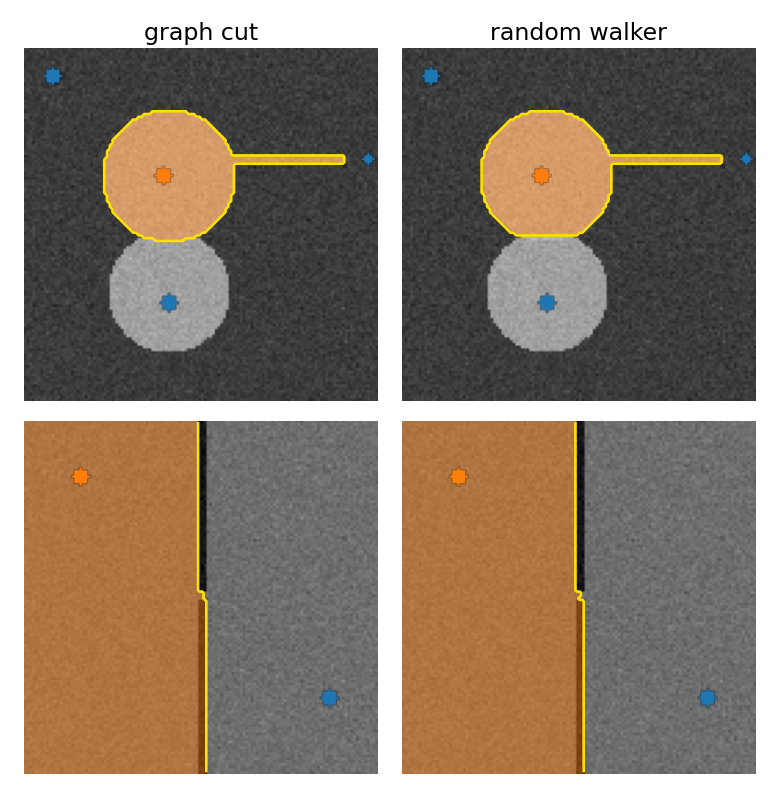
Image libraries ship it as “random walker segmentation”.
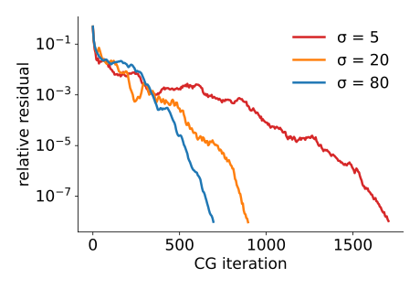